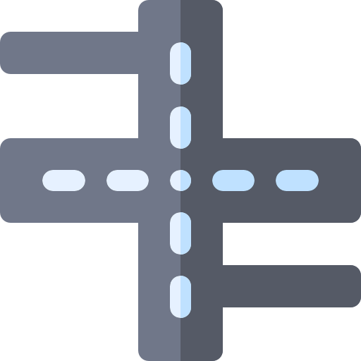
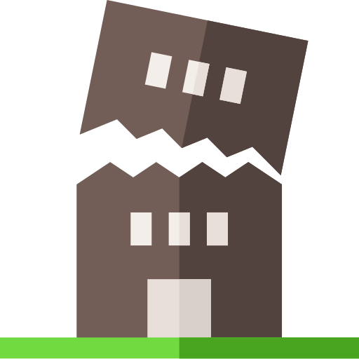
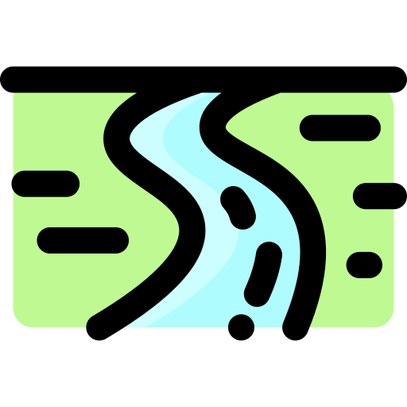
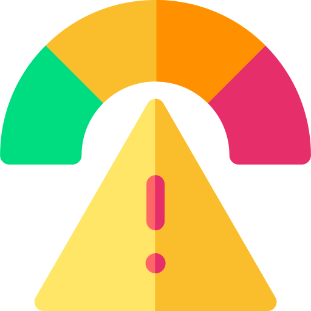
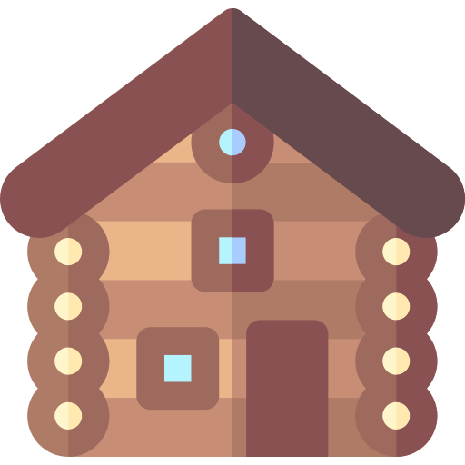
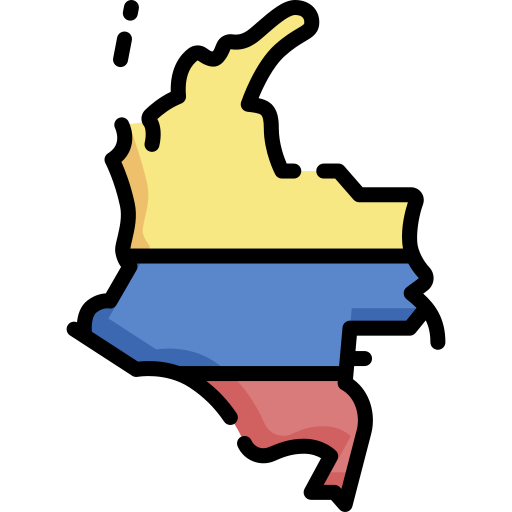
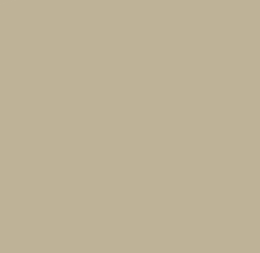
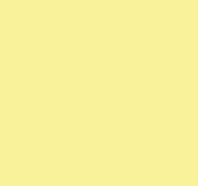

<!DOCTYPE html>
<html>
<meta charset="utf-8" />

<head>
	<link rel="stylesheet" href="https://unpkg.com/leaflet@1.6.0/dist/leaflet.css" />
	<script src="https://unpkg.com/leaflet@1.6.0/dist/leaflet.js"></script>
	<script src="https://code.jquery.com/jquery-3.2.1.js"></script>
	<script src="../@common/dist/leaflet-search-master/src/leaflet-search.js"></script>
	<script src="../@common/dist/Leaflet-MiniMap-master/src/Control.MiniMap.js" type="text/javascript"></script>
	<script src="../@common/dist/Leaflet.MousePosition-master/src/L.Control.MousePosition.js"
		type="text/javascript"></script>

	<link rel="stylesheet" href="../@common/dist/leaflet-search-master/src/leaflet-search.css" />
	<link rel="stylesheet" href="../@common/dist/Leaflet-MiniMap-master/src/Control.MiniMap.css" />
	<link rel="stylesheet" href="../@common/dist/Leaflet.MousePosition-master/src/L.Control.MousePosition.css" />

	<script src="./BarriosGJ.geojson"></script>
	<script src=""></script>
	<style>
		#map {
			width: 100%;
			height: 98vh;
			box-shadow: 5px 5px 5px #888;
		}

		.info {
			padding: 6px 8px;
			font: 14px/16px Arial, Helvetica, sans-serif;
			background: white;
			background: rgba(255, 255, 255, 0.8);
			box-shadow: 0 0 15px rgba(0, 0, 0, 0.2);
			border-radius: 5px;
		}

		.info h2 {
			margin: 0 0 5px;
			color: #777;
		}

		.legend {
			opacity: 0.9;
		}
	</style>
</head>

<body>
	<div id="map"></div>
	<script>

		const data = dataBarrio;

		const getGeoserverLayer = (name, attribution, position) => (
			L.tileLayer.wms("http://localhost:8080/geoserver/wms", {
				layers: name,
				format: 'image/png',
				transparent: true,
				position: position,
				attribution
			})
		)

		const gs_url = 'http://{s}.google.com/vt/lyrs=m&x={x}&y={y}&z={z}'
		const subdomains = ['mt0', 'mt1', 'mt2', 'mt3']

		const google_streets = L.tileLayer(gs_url, { maxZoom: 20, subdomains })
		const google_streets_min = new L.TileLayer(gs_url, { minZoom: 0, maxZoom: 13, subdomains })
		const googleMaps = L.tileLayer('http://www.google.cn/maps/vt?lyrs=s@189&gl=cn&x={x}&y={y}&z={z}', {
			attribution: '&copy; <a href="google.com">&nbsp; OpenStreetMap</a>contributors', maxZoom: 18
		});

		const gFuenteHidrica = getGeoserverLayer('final:fuentehidrica', 'Fuente Hidrica', 1)
		const gBufferCurvasQuebrada = getGeoserverLayer('final:buffercurvasquebrada', 'Buf. Curvas Quebrada', 2)
		const gCallePrincipal = getGeoserverLayer('final:calleprincipal', 'Vía Principal', 3)
		const gCalleSecundaria = getGeoserverLayer('final:callesecundaria', 'Vía Secundaria', 4)
		const gBufferBarrioRiesgo = getGeoserverLayer('final:barrios_dentrodebufferriesgo', 'Buf. Barrio Riesgo', 5)
		const gZonaRiesgo = getGeoserverLayer('final:zonariesgo', 'Zona Riesgo', 6)
		const gZonaInvasion = getGeoserverLayer('final:zonainvasion', 'Zona Invasión', 7)
		const gZonaBoscosa = getGeoserverLayer('final:zonaboscosa', 'Zona Boscosa', 8)
		const gBarrio = getGeoserverLayer('final:barrio', 'Barrio', 9)
		const gManzana = getGeoserverLayer('final:manzana', 'Manzana', 10)
		const gLimiteDepartamental = getGeoserverLayer('final:limitedepartamental', 'Lim Departamental', 11)

		const baseMaps = {
			"Google Street": google_streets,
			"Google Earth": googleMaps
		}

		var overlayMaps = {
			" Fuente Hidrica": gFuenteHidrica,
			" Calle Principal": gCallePrincipal,
			" Calle Secundaria": gCalleSecundaria,
			" Barrio Riesgo": gBufferBarrioRiesgo,
			" Zona Riesgo Quebrada": gBufferCurvasQuebrada,
			" Zona Riesgo": gZonaRiesgo,
			" Zona Invasión": gZonaInvasion,
			" Zona Boscosa": gZonaBoscosa,
			" Barrio": gBarrio,
			" Manzana": gManzana,
			" Lim Departamental:": gLimiteDepartamental
		};

		var overlayMapsVr2 = {
			" Fuente Hidrica": gFuenteHidrica,
			" Calle Principal": gCallePrincipal,
			" Calle Secundaria": gCalleSecundaria,
			" Barrio Riesgo": gBufferBarrioRiesgo,
			" Zona Riesgo Quebrada": gBufferCurvasQuebrada,
			" Zona Riesgo": gZonaRiesgo,
			" Zona Invasión": gZonaInvasion,
			" Zona Boscosa": gZonaBoscosa,
			" Barrio": gBarrio,
			" Manzana": gManzana,
			" Lim Departamental": gLimiteDepartamental
		};

		var map = L.map('map', {
			center: [1.6202867, -75.6306709],
			zoom: 16,
			layers: [
				googleMaps,
				gFuenteHidrica,
				gCallePrincipal,
				gCalleSecundaria,
				gBufferCurvasQuebrada,
				gBufferBarrioRiesgo,
				gZonaRiesgo,
				gZonaInvasion,
				gZonaBoscosa,
				gBarrio,
				gManzana,
				gLimiteDepartamental
			],
			scrollWheelZoom: true,

		});

		const scale = L.control.scale({ imperial: false, position: 'bottomright' })
		scale.addTo(map)

		const mousePosition = L.control.mousePosition()
		mousePosition.addTo(map)

		const miniMap = new L.Control.MiniMap(google_streets_min, { toggleDisplay: true, position: 'bottomleft' })
		miniMap.addTo(map)

		const title = L.control()
		title.onAdd = (map) => {
			let div = L.DomUtil.create('div', 'info')
			div.innerHTML += '<h2>VISOR WEB PARA LA PROBLEMÁTICA DE LAS INVASIONES</h2><h2>CERCA DE LA “QUEBRADA EL DEDO” EN EL BARRIO</h2><h2>CIUDADELA HABITACIONAL SIGLO XXI</h2>'
			return div
		}
		title.addTo(map)

		var legend = L.control({ position: 'bottomright' });
		legend.onAdd = function (map) {
			var div = L.DomUtil.create('div', 'info legend');
			div.innerHTML +=
				'';
			return div;
		};
		title.addTo(map);

		L.control.layers(baseMaps, overlayMapsVr2, { collapsed: false }).addTo(map);

		legend.addTo(map);
		L.control.scale({
			position: 'bottomright',
			imperial: true
		}).addTo(map);

		function BarrioHover(e) {
			var layer = e.target;
			layer.setStyle({
				fillColor: '#FF5733',
				weight: 2,
				color: '#000000',
				dashArray: '',
				fillOpacity: 0.2
			});
		}

		function RestartHover(e) {
			featuresLayer.resetStyle(e.target);
			info.update();
		}

		function Zoom(e) {
			map.fitBounds(e.target.getBounds());
		}

		console.log('data', data)
		const featuresLayer = new L.GeoJSON(data, {
			style: function (feature) {
				return { color: feature.properties.color };
			},
			onEachFeature: function (feature, marker) {
				marker.bindPopup("<strong>" + feature.properties.nombre + "</strong>"),
					marker.on({
						mouseover: BarrioHover,
						mouseout: RestartHover,
						click: Zoom
					});
			}
		});
		map.addLayer(featuresLayer);

		var searchControl = new L.Control.Search({
			layer: featuresLayer,
			propertyName: 'nombre',
			marker: false,
			moveToLocation: function (latlng, title, map) {
				var zoom = map.getBoundsZoom(latlng.layer.getBounds());
				map.setView(latlng, zoom);
			}
		});

		searchControl.on('search:locationfound', function (e) {
			e.layer.setStyle({ fillColor: '#3f0', color: '#FF5733' });
			if (e.layer._popup)
				e.layer.openPopup();
		}).on('search:collapsed', function (e) {
			featuresLayer.eachLayer(function (layer) {
				featuresLayer.resetStyle(layer);
			});
		});

		map.addControl(searchControl);
	</script>
</body>

</html>